JStory [국토종주편]
JStory [국토종주편]3일차 이야기 : 문경읍 ~ 강정고령보인증센터 [151km]
7인 대열주행
3일차는 국토종주를 하면서 다양한 인연들을 만난 날이다.
(다양한 사람들을 만나는 것이 국토종주의 묘미라고 생각한다~)
문경에서 3일차 아침이 밝아왔다.
아침에 문연 식당이 없어서 간단하게 편의점에서 북어국을 먹고 상주를 향해 출발하였다.
상주 가는 길에 문경불정역인증센터가 있었는데 폐역의 모습이 참 인상겨운 장소다.
 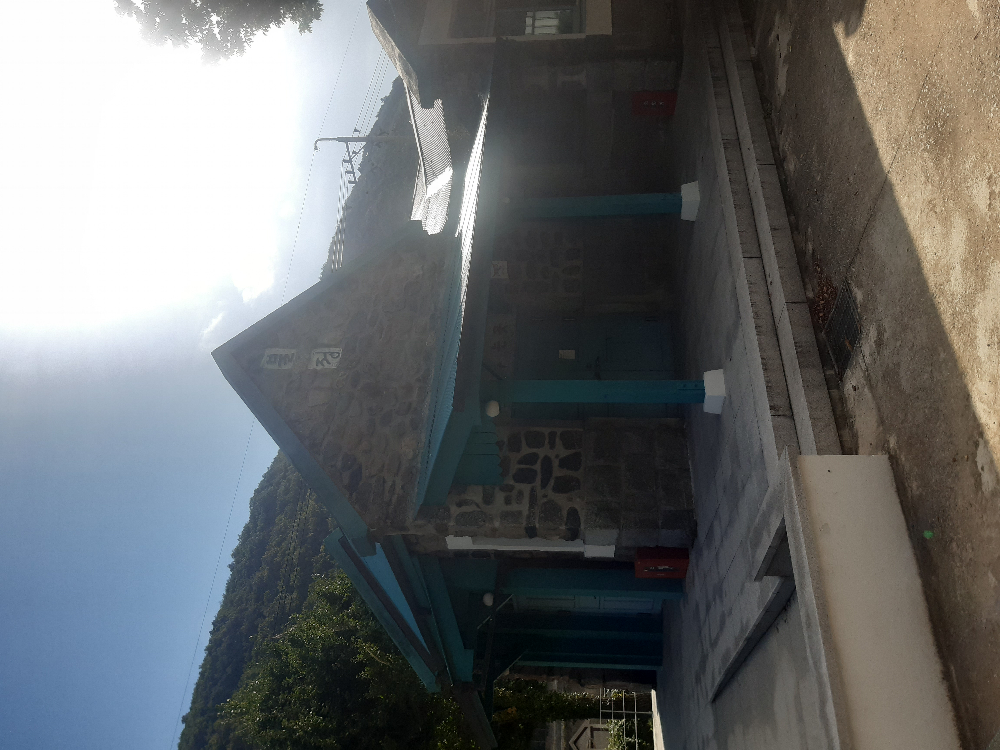
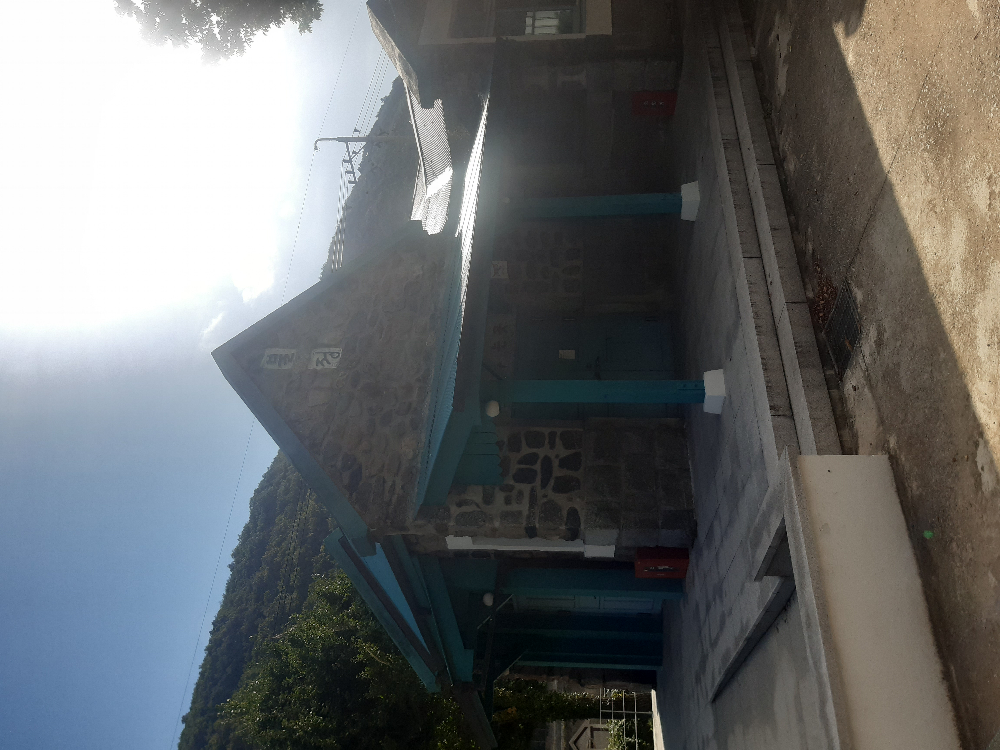
 지금은 폐역이 되버린 문경불정역을 보면서 이런 저런 생각이 들게 해주었다
지금은 폐역이 되버린 문경불정역을 보면서 이런 저런 생각이 들게 해주었다
문경불정역에서 잠시 사진을 찍고 바로 상주상풍교를 향해 달려갔다.
새로운 인연 2명을 만난건 이 구간에서 였다.
여느 때와 같이 여유를 즐기며 상주상풍교로 이동하고 있었는데 나를 추월해가는 또다른 국토종주 맴버들을 발견하였다.
한강라이딩 할 때는 추월하고 추월 당하는게 익숙한데 상주에서 추월당하니까 뭔가 지기 싫은 승부욕이 발동했고 그 2명의 뒤를 쫒아달렸다ㅋㅋ
그렇게 시속30km의 속도로 따라가다보니 금새 상주상풍교인증센터에 도착할 수 있었고 그곳에서 새로 안 인연과 인사를 나누었다..!
인사를 나누다보니 새 인연들도 국토종주 중 임을 알게 되었고 함께 달리게 되었다~
 상주 진입을 알리는 푯말
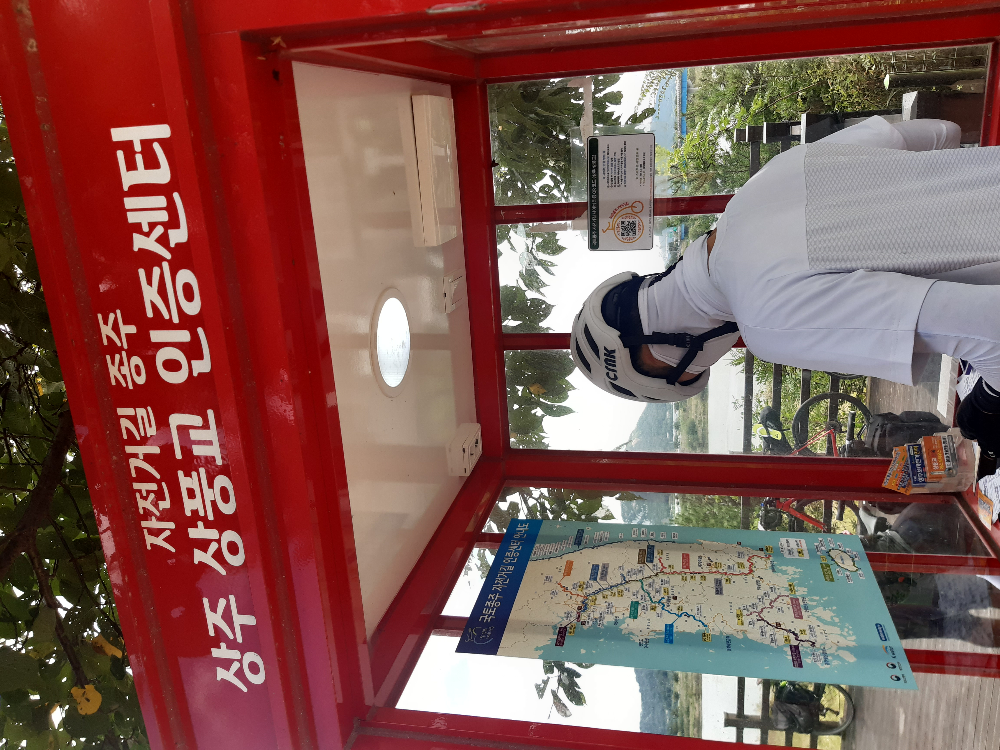
상주 진입을 알리는 푯말
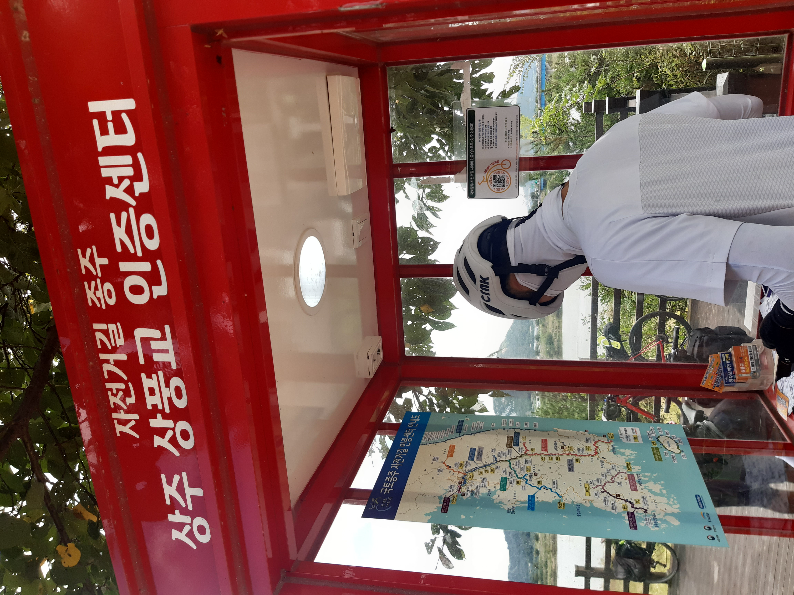
 상주상풍교 인증센터에는 오래 전부터 양심물판매대가 있어서 국토종주하는 라이더들이 1000원을 자발적으로 내고 물을 수령해간다
상주상풍교 인증센터에는 오래 전부터 양심물판매대가 있어서 국토종주하는 라이더들이 1000원을 자발적으로 내고 물을 수령해간다
그렇게 4인이서 점심도 먹고 상주상풍교부터 상주보, 낙단보까지의 여정이 시작되었다.
그러다가 낙단보부터 칠곡보까지는 2명의 새로운 인연이 합류해서 6인대열주행이 시작되었다.
서로 맨 앞에서 역풍을 막아주는 등 힘을 합쳐 칠곡보로 들어갔다!
 상주보인증센터
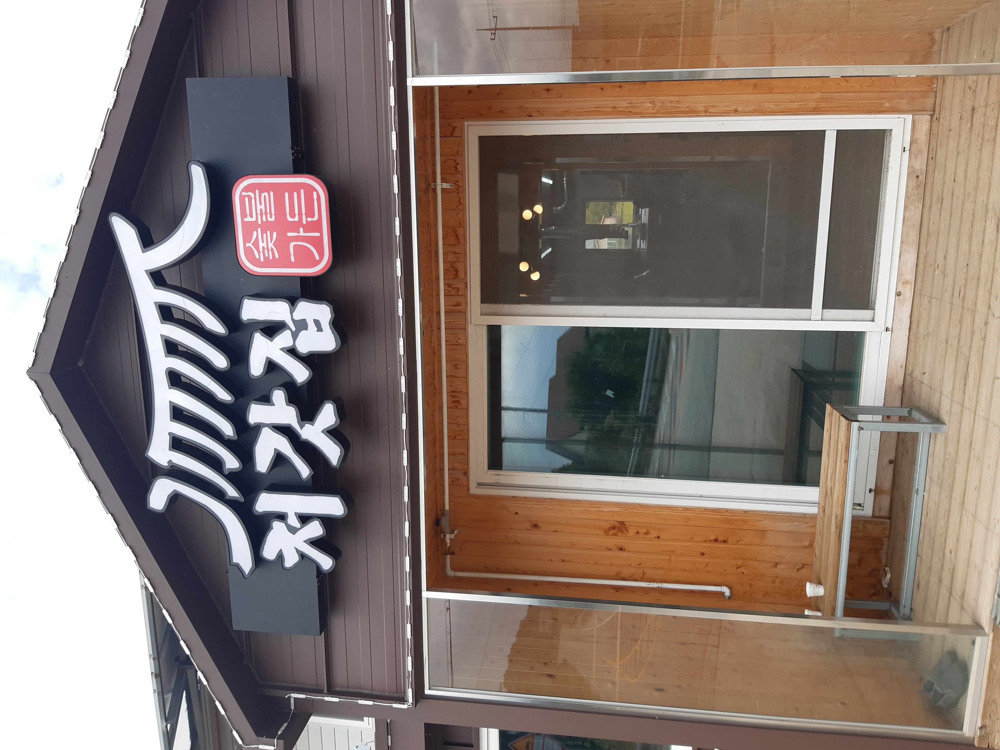
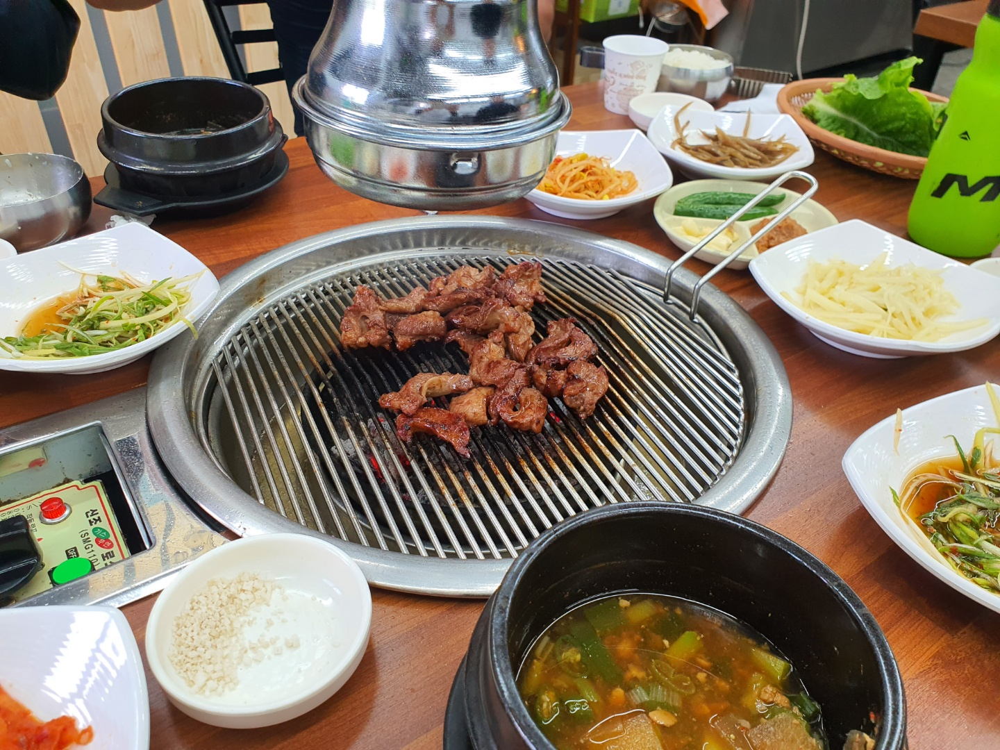
상주보와 낙단보 사이에 있는 고깃집, '처갓집'
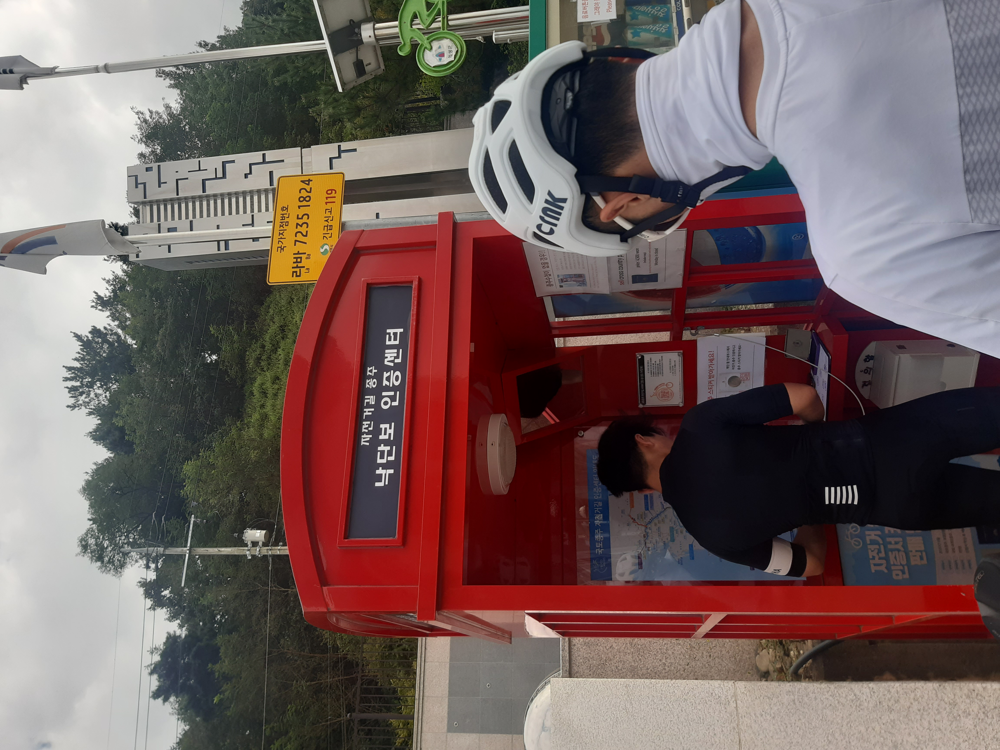
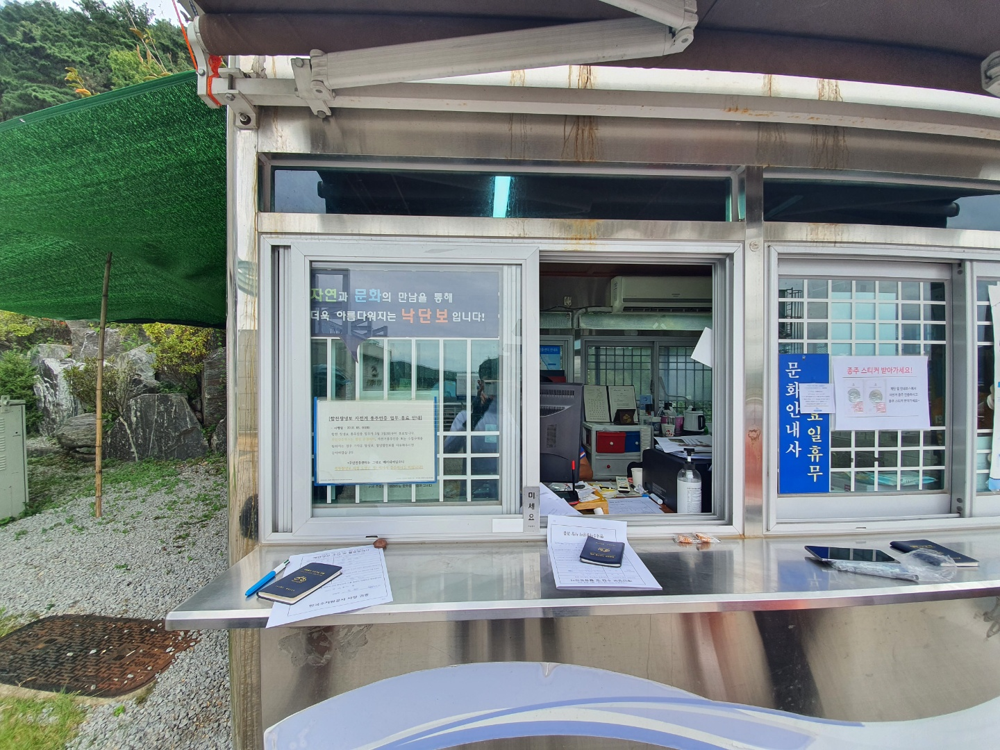
낙단보 + 낙단보 체크포인트 매표소
상주보인증센터
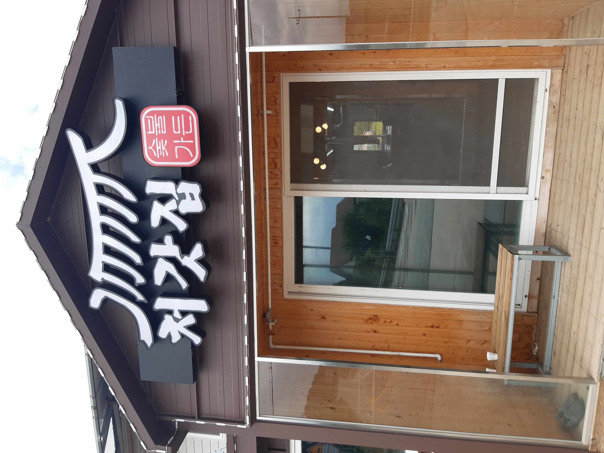
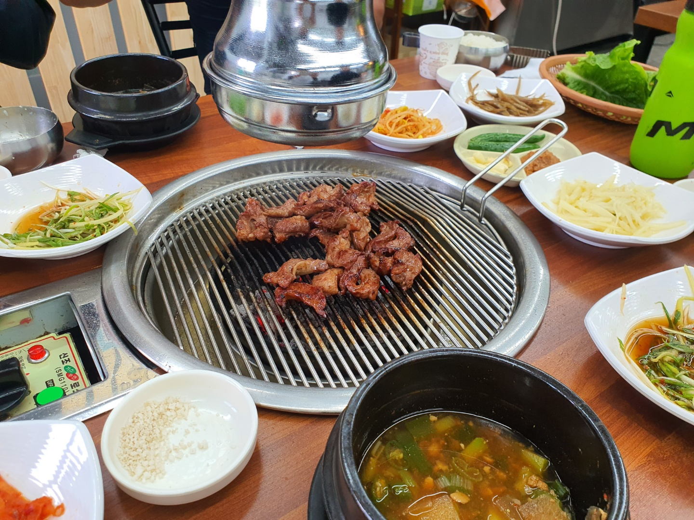
상주보와 낙단보 사이에 있는 고깃집, '처갓집'
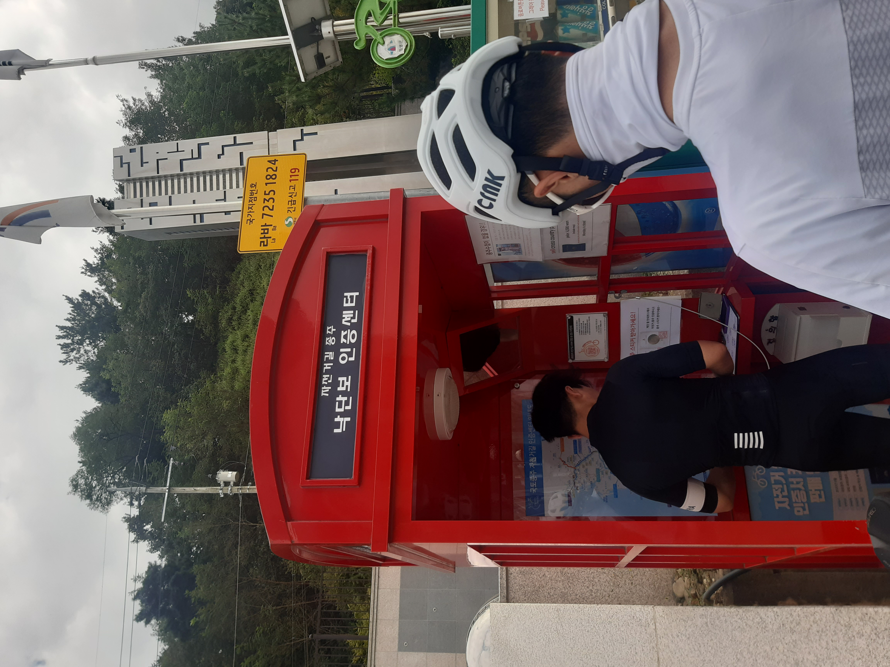
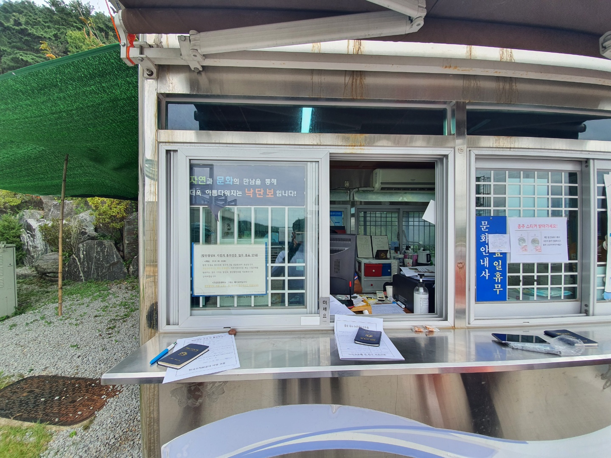
낙단보 + 낙단보 체크포인트 매표소
 6인대열주행 -> 4인체제 / 칠곡보인증센터
6인대열주행 -> 4인체제 / 칠곡보인증센터
칠곡보인증센터 이후부터는 다시 4명이서 강정고령보인증센터를 향해 달려갔다.
칠곡보부터 강정고령보까지 야간에 달리기에는 거리가 꽤 멀었으며 중간부터는 정식루트가 아닌 지름길을 택했다.
그렇게 4명이서 야간지방도라이딩이 시작되었고 밤 8시쯤 3일차 마지막 목적지인 강정고령보인증센터에 도착히였다.
강정고령보까지 함께했던 인연 2명은 다음날 부산을 도착해야한다면서 강정고령보를 넘어 달성보를 향해 갔고, 강정고령보에 남은 우리 2명은 숙소를 잡고 늦은 저녁을 먹었다.
 대구m모텔에서 먹은 보쌈 (지금까지 묵었던 숙소 중에서 가장 좋았던 기억이..)
대구m모텔에서 먹은 보쌈 (지금까지 묵었던 숙소 중에서 가장 좋았던 기억이..)